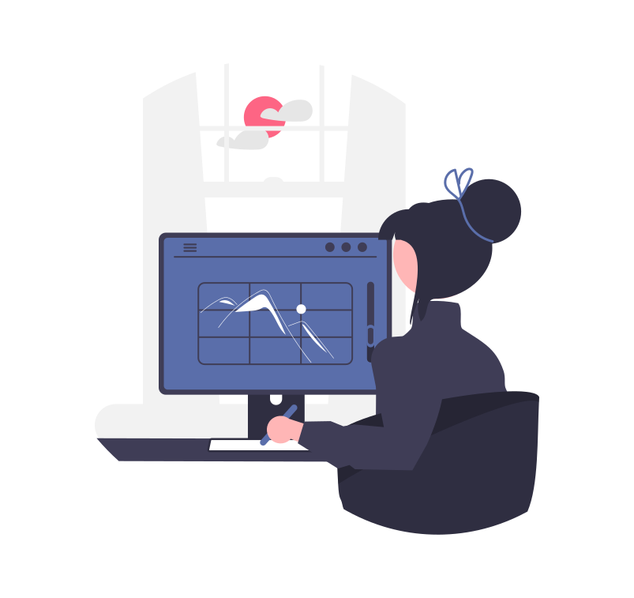

Objetivos
Objetivos UX
Conseguir que los adultos mayores puedan adaptarse de forma rápida
y segura a las aplicaciones home banking, para así cumplir sus
objetivos sin necesidad de recurrir a otros métodos más
rudimentarios y complicados, como realizar pagos de servicios o
impuestos en entidades físicas, las cuales quitan tiempo y
esfuerzo.
Ojetivo de Negocio
Para seguir mejorando, se busca incrementar un 40% la utilización
del servicio digital por parte de los usuarios mayores en los
próximos 4 meses. Teniendo en cuenta que de estos usuarios, en
general, solo el 40% aproximadamente utiliza canales digitales.
